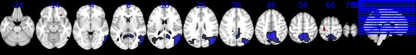
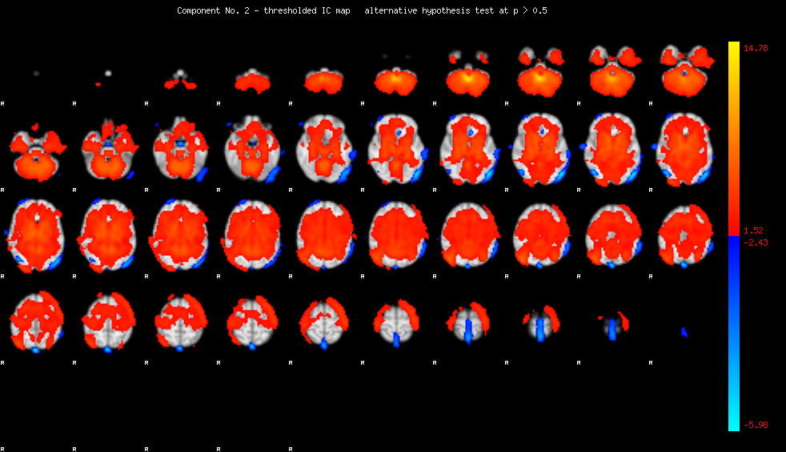
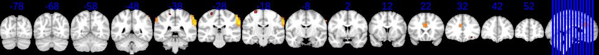

NYUALL DETAILED REPORT
This
report shows significant functional network differences between ADHD
and control for 178 (those passing QA out of a potential 216) of the
NYU ADHD200 dataset. 10 subject subset of the NYU ADHD200
dataset. The original goal was to look for overlaps between
structural and functional deficits. For a review of structural
deficits, see the NYU10 report.
FUNCTIONAL NETWORKS Significant functional
network differences between ADHD and Control derived with multi-session
temporal concatenation group ICA analysis and dual regression.
FUNCTIONAL NETWORK DIFFERENCES: Includes top max voxel coordinates found to be significantly different between ADHD and Control with anatomical labels.
FUNCTIONAL NETWORK OVERVIEW: Includes summary of each component, and likely network or artifact
FUNCTIONAL NETWORKS
Jump to a component: 1 2 3 4 5 6 7 8 9 10 11 12 13 14 15 16 17 18 19 20 21 22 23 24 25
COMPONENT
1

back to top
COMPONENT 2

back to top
COMPONENT 3
back to top
COMPONENT 4

back to top
COMPONENT 5
back to top
COMPONENT 6
back to top
COMPONENT 7

back to top
COMPONENT 8
back to top
COMPONENT 9
back to top
COMPONENT 10
back to top
COMPONENT 11

back to top
COMPONENT 12
back to top
COMPONENT 13
back to top
COMPONENT 14

back to top
COMPONENT 15

back to top
COMPONENT 16
back to top
COMPONENT 17
back to top
COMPONENT 18
back to top
COMPONENT 19
back to top
COMPONENT 20
back to top
COMPONENT 21
back to top
COMPONENT 22
back to top
COMPONENT 23
back to top
COMPONENT 24
back to top
COMPONENT 25
back to top